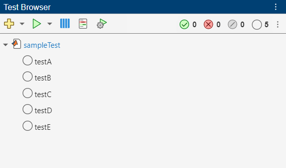
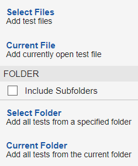
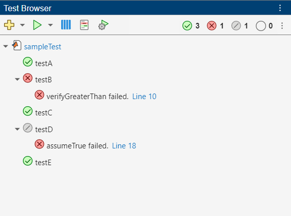
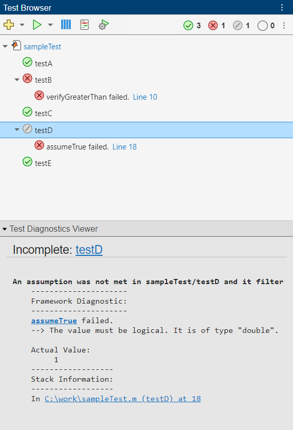
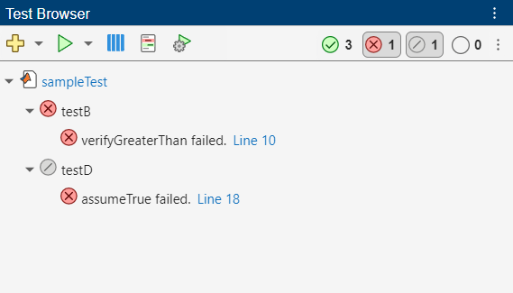
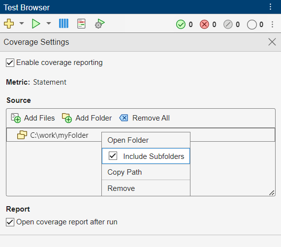

Run Tests Using Test Browser
The Test Browser app enables you to run script-based, function-based, and class-based tests interactively. The examples in this topic show how to use the test browser to:
Create a test suite from files or folders.
Run all or part of the specified tests and access diagnostics.
Debug test failures.
Customize a test run with options, such as running tests in parallel (requires Parallel Computing Toolbox™) or specifying a level of test output detail.
Generate an HTML code coverage report for MATLAB® source code.
Create Test Suite
You can use the test browser to interactively create a test suite from files or folders, and then run and analyze the included tests.
For example, create a function-based test file named
sampleTest.m in your current folder.
function tests = sampleTest tests = functiontests(localfunctions); end function testA(testCase) verifyEqual(testCase,2+3,5) end function testB(testCase) verifyGreaterThan(testCase,13,42) end function testC(testCase) verifySubstring(testCase,"Hello World!","llo") end function testD(testCase) assumeTrue(testCase,1) end function testE(testCase) assertSize(testCase,ones(2,5,3),[2 5 3]) end
Open the test browser from the Command Window.
testBrowser
Add the tests to the test browser by clicking the Add tests button
on the toolbar and then selecting the
sampleTest.m file. The test browser imports the tests and
creates a test suite. The tests in the suite appear as a test tree, where the parent
node is a link pointing to the test file and the child nodes are the names of the
test procedures. To open the test file from the test browser, click the link in the
tree. To view the code for a specific test, right-click the test name and select
Open Test.
When you create a test tree by adding tests to the test browser, child nodes in the tree display a Not Run status . After the test that corresponds to a child node runs, the test browser updates its status to Passed , Failed , or Incomplete . The status buttons on the toolbar provide a summary of the current test suite.
Note
After multiple test runs, the statuses of tests that ran before the most recent test run appear dimmed in the Test Browser panel. (since R2025a)
In this example, the test suite created from sampleTest.m
contains five tests, corresponding to the local functions in the test file. The
number, 5, next to the Not Run status
on the toolbar indicates that none of the tests
have run.

You can also add tests to the test browser by clicking the drop-down arrow to the right of the Add tests button on the toolbar and then selecting an option from the list. The list lets you add tests from files or folders:
To add the tests from specified test files, select Select Files.
To add the tests from the currently open test file, select Current File.
To add the tests from a specified folder, select Select Folder.
To add the tests from your current folder, select Current Folder.
To include the tests in the subfolders of the folder you specify, select Include Subfolders.

When you add multiple files, the test tree includes multiple parent nodes, each pointing to a different test file. You can remove a parent node and its children from the test tree by right-clicking the parent node and selecting Remove Test File. To remove all the tests from the test browser, click the three-dot button or right-click a top-level parent node and then select Remove All Tests.
Run Tests
You can run the tests added to the test browser interactively:
To run all the tests that appear in the Test Browser panel, click the Run current suite button on the toolbar.
To run a test file, right-click its node in the test tree and select Run Test File.
To run a single test, right-click its name in the test tree and select Run Test.
To run multiple tests, press the Ctrl key while making test selections with the mouse. (On macOS systems, use the Command key instead.) Then, right-click one of the selected nodes and select Run Tests.
To rerun the tests from the most recent test run, click the drop-down arrow to the right of the Run current suite button and then select Rerun Tests. (since R2025a)
For example, run the tests in the sampleTest.m file by clicking
the Run current suite button
. The test browser runs the tests and updates
their statuses. As the tests run, the Command Window displays the test run progress
and diagnostics. In this example, three tests pass, one test fails due to a
verification failure, and one test remains incomplete due to an assumption failure.
The status buttons on the toolbar provide a summary of the test results.

Even though the Command Window displays diagnostic information for your tests, you can access this information directly in the test browser. To access the diagnostics for a test, click its node in the test tree. For example, click the name of the incomplete test. The Test Diagnostics Viewer section at the bottom of the Test Browser panel indicates that the test did not run to completion due to an assumption failure. You can collapse and expand the Test Diagnostics Viewer section.

You can use the status buttons on the toolbar as filters to focus on a specific group of tests. Using these filters, you can display tests that passed, failed, remained incomplete, or did not run. To set a filter, click its button on the toolbar. For example, display only the failed or incomplete tests.

You can interact with a filtered suite the same way you interact with the original test suite. For example, you can run the filtered suite by clicking the Run current suite button . To clear a filter, click its button on the toolbar. To clear all the filters, click the three-dot button and select Clear Status Filters.
Debug Test Failures
You can use the test browser to debug test failures. When a test fails due to a qualification failure or uncaught error, its node in the test tree provides a link to where the failure or error occurred. If you click the link, MATLAB opens the file that contains the test in the Editor or Live Editor and highlights the line of code that resulted in the failure or error.
To debug a test failure, set a breakpoint on the highlighted line of code. Then, run the test by right-clicking its node in the test tree and selecting Run Test. MATLAB enters debug mode and enables debugging capabilities that you can use to investigate the cause of the test failure. For more information on debugging MATLAB files, see Debug MATLAB Code Files.
Customize Test Run
You can customize your test run by selecting options in the toolbar. The test browser uses the selected test options whether you run all the tests or a subset of the tests. This table shows the supported test options.
| Test Option | Description |
|---|---|
Parallel Execution | Run tests in parallel. This option is available only if you have Parallel Computing Toolbox installed. To run tests in parallel, click the Enable parallel test execution button . This selection persists for the duration of your current MATLAB session. Selecting this option is the
same as specifying the |
Strictness | Apply strict checks when running tests. For example, the testing framework generates a qualification failure if a test issues a warning. To apply strict checks, click the Customize test run button , and then, in the Test Run Settings dialog box, under Strictness, select Apply strict checks when running tests. This selection persists across different MATLAB sessions. Selecting this option is the
same as specifying the |
Output Detail | Control the amount of output detail displayed for a test run. To control the output detail, click the Customize test run button , and then, in the Test Run Settings dialog box, under Output Detail, select Use Default or clear Use Default to specify an output detail setting. This selection persists across different MATLAB sessions. Selecting a value for this
option is the same as specifying the
|
Logging Level | Display diagnostics logged by the To control the logging level, click the Customize test run button , and then, in the Test Run Settings dialog box, under Logging Level, select Use Default or clear Use Default to specify a verbosity level. This selection persists across different MATLAB sessions. Selecting a value for this
option is the same as specifying the
|
Note
The parallel execution, strictness, output detail, and logging level options are synchronized across the Test Browser toolbar and the Run section on the Editor (or Live Editor) tab on the MATLAB Toolstrip. If you select an option in one of these interfaces, the selection applies to the other interface as well. For example, if you enable parallel test execution in the test browser, MATLAB automatically selects this option in the Run section of the toolstrip.
Generate Code Coverage Report
You can collect code coverage information and generate an HTML code coverage report for your source code when you run tests using the test browser. In MATLAB, the code coverage analysis provides information about function and statement coverage. For more information, see Types of Code Coverage for MATLAB Source Code.
To generate a code coverage report, click the Open coverage settings button on the toolbar, and then select Enable coverage reporting. The Coverage Settings section expands and lets you specify source code and choose whether to automatically open the coverage report after the test run. The coverage settings persist for the duration of your current MATLAB session.
To specify source files, under Source, click the Add Files button and select the files.
To specify a source folder, under Source, click the Add Folder button and select the folder. To include source code in the subfolders of the specified folder, right-click the folder path and then select Include Subfolders.
To automatically open the generated code coverage report after the test run, under Report, select Open coverage report after run. If you clear the check box, you can access the report by using the file path in the Command Window.

If you run all your tests or a subset of them with coverage reporting enabled, the test browser generates a code coverage report for your source code based on the tests that ran. If you do not specify any source code, the tests still run, but the test browser does not generate a report.
See Also
Apps
Functions
Topics
- Run Tests in Editor
- Insert Test Code Using Editor
- Collect Statement and Function Coverage Metrics for MATLAB Source Code